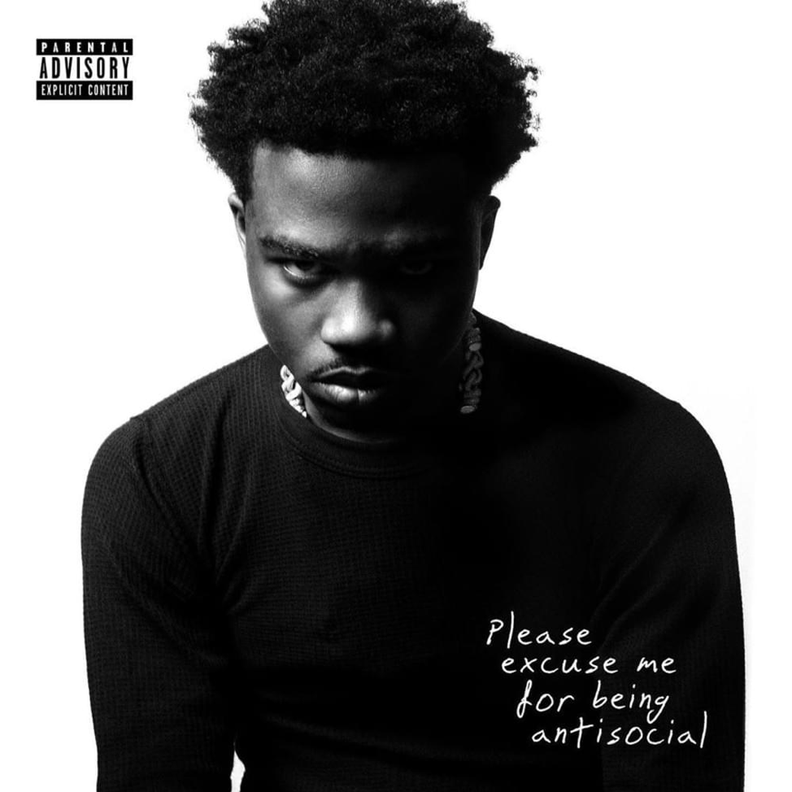
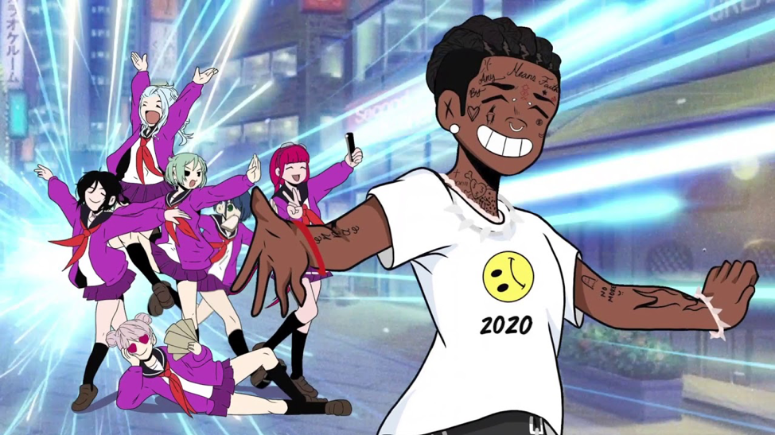
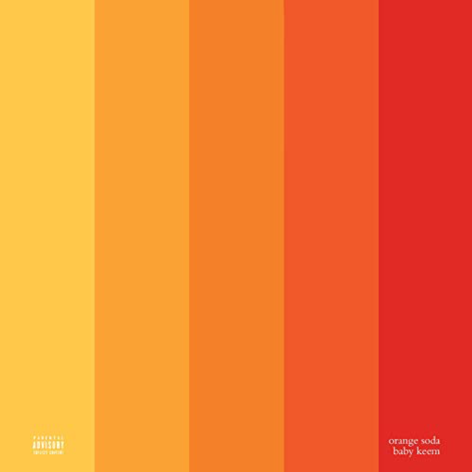
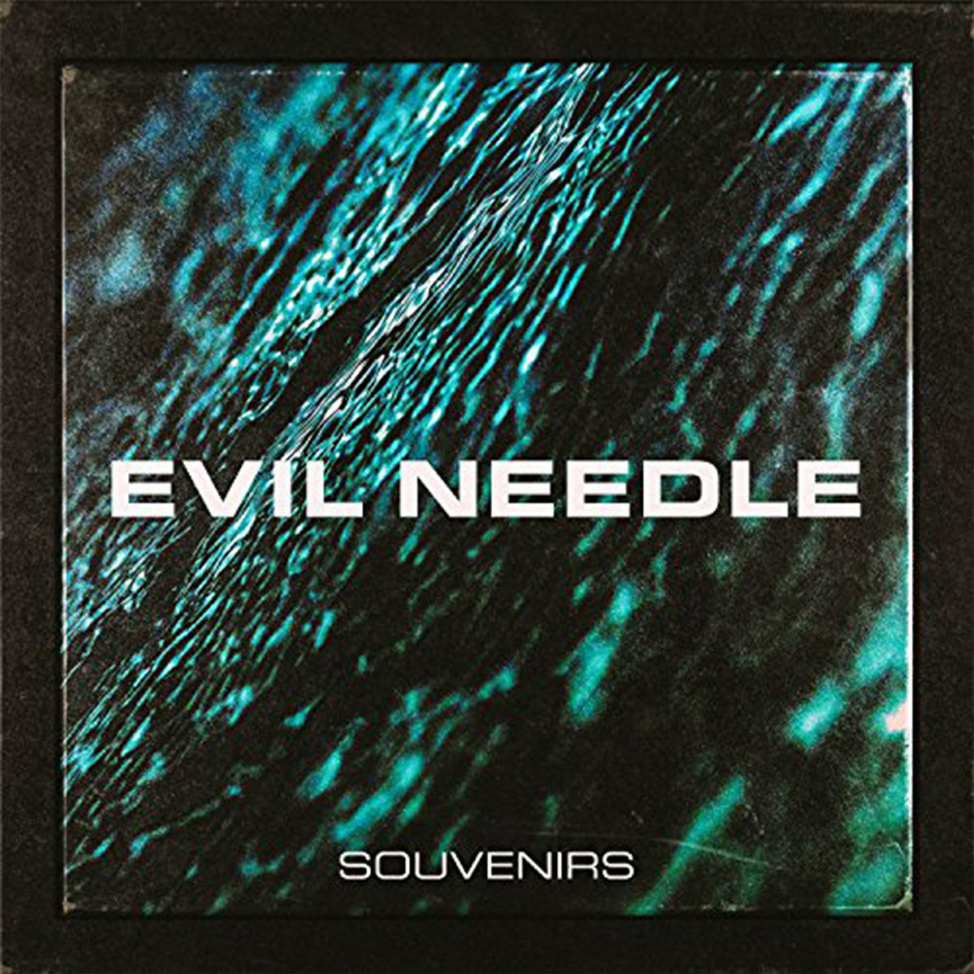
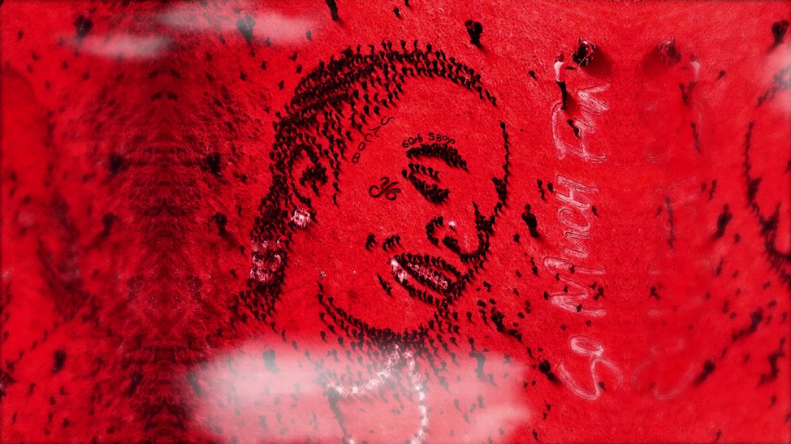
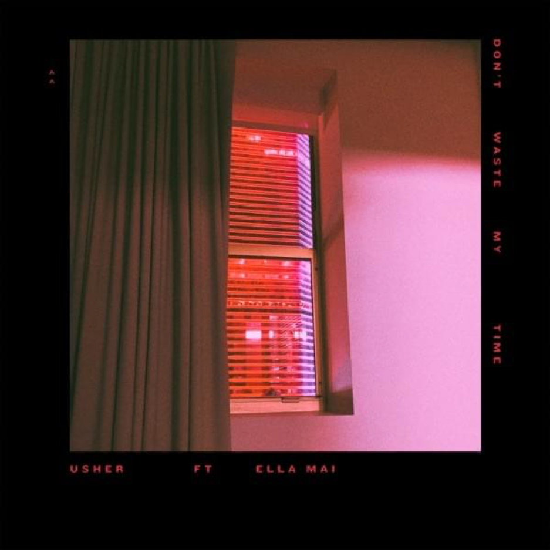
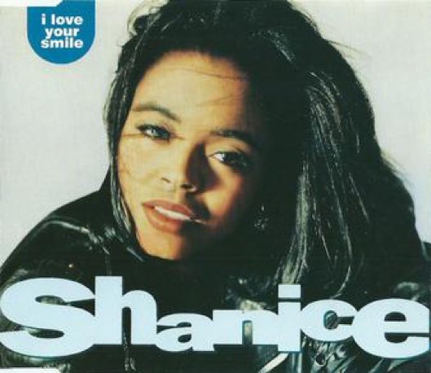
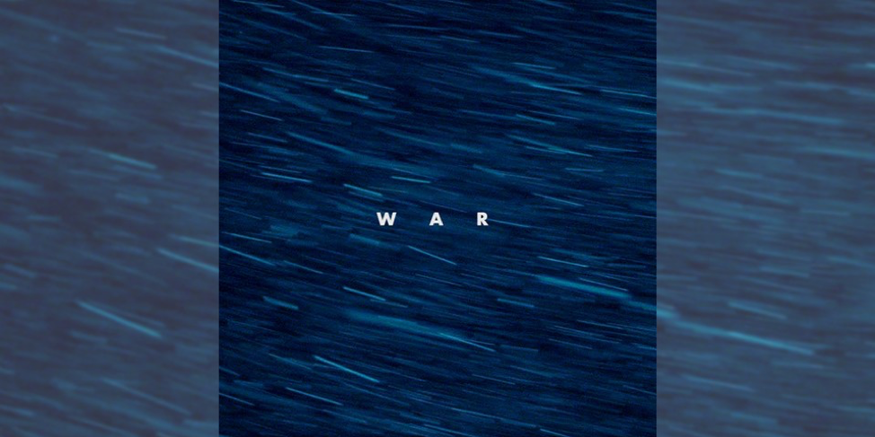
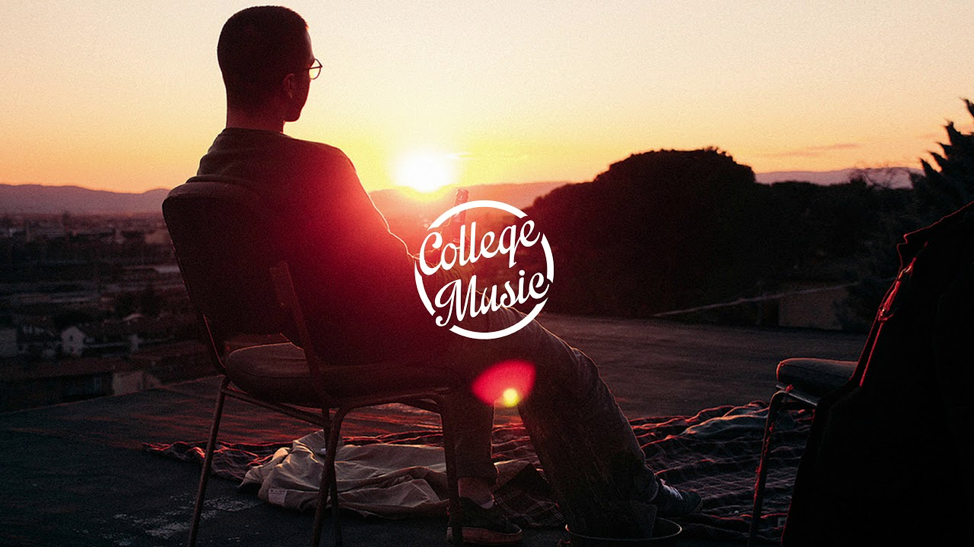

Best Songs of December 2019
December 24th, 2019 9:30AM CST Article by Fantasia Wesley
This is not about numbers, but an actual opinion on talent
1. Big Stepper- Roddy Ricch
Now, if you heard Roddy Ricch’s new album, then you will know that the ENTIRE album is a slap! His album Please Excuse Me for Being Antisocial is refreshing because you can tell he had fun in the studio while recording. You can feel the aura and atmosphere of his surroundings (here I go being fake deep). From the intro to the War Baby, I can say that the album will put you in the mood to get up and go! Where to? Wherever you want. This album is pure motivation, inspiration, a vibe, and definitely an album you can repeat. Some of the songs will be timeless; Start wit Me feat Gubba, High Fashion ft Mustard, and Big Stepper especially.
Now this song in particular is very determining and enthusiastic. I loves how he says “I want a billion -----, so that’s on God I ain’t chilling” which gave me chills. This song makes you want to go mop your floor and finish the rest of your to- do list from last month. One thing I didn’t relate to was “My chef cooked up filet mignon, I sauced it and ate it”… Um, first off if the steak is good, you never sauce it! That’s rule 101, you take away from the natural flavors and texture when you put steak sauce on a steak. Well, that’s just my opinion. Carry on.
Where does the title of the song come from? Well after doing some thorough research on “Big Stepper”, I seen on Urban Dictionary that the definition was an overachiever or someone who gets the job done. In his first verse he says “Big stepper like Big Meech, mhm”. I didn’t know who Big Meech was, so it was a slight history lesson. Big Meech is a MAJOR former drug dealer with the net worth over $100 million. He also was the head of ‘The Black Mafia Family’ (BMF) which was a drug trafficking and money laundering organization. I never knew. So, I believe Roddy Ricch sees him as inspiration to work hard, comparing himself with Big Meech on his work ethic.
I believe everyone should give this album a go. There have been some comments regarding his similar sound to Young Thug. I wouldn’t say he sounds identical Young Thug simply because Roddy Ricch has a different melody and tone in his music, he hits great pronunciation skills are a killer “And I’m still heeeerrrreeee”. What do you guys think?
2. Futsal Shuffle 2020- Lil Uzi Vert
I’m not going to lie; I love this song for multiple reasons.
- 1) One, because as soon as the song play you hear Tyler The Creator “Yo sing that ---- are you ------- dumb?” and I said “Yeeeessssss this is a viiiiiibeeeee”. Then you here the deep bass, and if you have subs then you are luckily getting spoiled with this song!
- 2) Because he says, “Are you serious?” and the way he annunciates the question makes me understand where he’s coming from, as if I know.
- 3) It’s so catchy! You can literally rock to this song anyway you want. Try rocking slow to it. Now rock faster, you are still on tempo right? Crazy!
This song is about his old girlfriend getting an imitation of him. He refers to the imitator as a “clone” and tells her to “do better”. Not only does he discuss his past boo, but he also raps about his soon to be boo and how he has to shoot a shot two times. Sending her two DM’s after she ignored the first, showing the ultimate thirst (it’s a joke). Overall, the song can get you hype, if you’re looking for a song with energy, give it a listen. It’s worth the listen. It gives you the ultimate confidence while listening to a bop. Canadian Musician and also interviewer was in the song towards the end with his famous “dododododo” along with the “thank you!!!”. It’s such a iconic moment in music history, definitely.
3. Puff Lah- Kaytranada

Kaytranada, also a Canadian (DJ) is one of the most talented. I was today years old when I found that Kaytranada was Canadian, as he gives me California feels. He gives me so much Nostalgia and environmental comfort, it’s weird. from “At All” by him in 2013-2014 to, I was hype to enter the world of Electronic music and experience the emotions that his music gives. It was reviving for me and truly an internal high listening. His latest album BUBBA is in the category of R&B/ Soul which this album definitely gives.
It’s a vibe.
Now, Puff Lah in particular is such a strolling down the street, in your drop top, on a sunny day, shades on, with the beautiful palm trees in the background type of song. It also makes me want to start rapping on it like I always try to do with his music. I don’t know, maybe he is trying to get a person to create a remix. All I know is that the song gives off positive energy. Whoever decides to create a remix, make sure you talk about how grateful you are, and the lessons you learned, and the life you want to manifest. Yes, this song speaks volumes with no words, and maybe it should be kept that way.
4. Orange Soda- Baby Keem
Baby Keem is cocky, arrogant, and full of himself with this song and I absolutely love it. Seeing that he should feel that way with his background of working with some of the world’s most renowned artist like Beyoncé and Kendrick Lamar for the song “Nile” on The Lion King- Billboard announced. He was the co-writer and co-producer on the project at only 18 years old. Imagine being able to code- switch from Lion King soundtrack to trap music at the age of 18 years old. That is inspiring. But back to the song, the beat is very catchy, especially with the drum sound in the background I don’t know which instrument it is, but I like it, whatever it is. His remarks are derogatory but appealing, if you know what I mean. I mean, the song is good. Lyric wise, you can tell he is just enjoying the moment, it’s a fun song to bop to, work out to, get ready to. I love when he says “My lil baby a flexeeeerrr”.
5. Astrodeep- Evil Needle
Evil Needle was my most listened to artist of this year, with a whopping 29 hours of tranquility. I would say, I was sort of underwhelmed when listening to the album Souvenirs II despite that I have listened to every single song that he has come out with. Maybe it’s because he went down the hip-hop genre and haven’t 100% began to get comfortable with the style. Most of Evil Needles music is smooth, calm, and elegant. This is music you can listen to while cleaning, relaxing, bathing, or doing homework. I mean, its your preference. I appreciate Astrodeep simply because the song is what I needed in the moment. It is soothing to say the least. I get very anxious at times and need to chill out, so if you’re a person who has anxiety and freaks out over the simplest things, well this is for you! I can imagine myself strutting down the runway listening to this song, and absolutely feeling myself. I am also gaining confidence as I listen.
6. Hop Of a Jet- Young Thug feat Travis Scott
This song is tropical, whimsical and brings back that 2015 Young Thug. It’s clearly a good song, putting you in a better mood no matter if you had a bad day. This gives me Hawaii vibes (as if I ever went there) simply because of the sound in the background. This song tells me I need to be on a beach, drinking coconut water eating pineapples and Honolulu Chicken. Young Thug’s album was released August 16th, 2019 with some of the most anticipated hype this year. The album was debuted No. 1 Album on the Billboard 200 Chart. But this particular song is on his Deluxe version of this album, meaning it’s a specialty and I see why.
Obvious, there is not much of elucidation in the lyrics. It’s the tone in their voices that match perfectly with the instrumental. Just another positive slap from Young Thug, I expect nothing less from him.
7. Don’t Waste My Time- Usher feat Ella Mai
Don’t Waste My Time has a peculiar taste, and its mine! I have been listening to this song since it dropped December 12th, 2019. The R&B song has made it on my playlist and gives me the flirtatious vibe that Usher is known for. It was a collab I didn’t think we all needed but appreciates because it is here.
For all I know, this song will not have an expiration day anytime soon. The song is needed for this generation, with the flare of old school nostalgia from the early 90’s. Ella Mai’s music is timeless as well, so it was a great collaboration for R&B. If you haven’t noticed, I love positive music. Only on certain days I feel like listening to some sad music, or break up music, or music that just gives a bad vibe.
8. I Love Your Smile- Shanice
This is far from a new song! This is a song from 1991, in the R&B genre and gives such a cheerful and sanguine feeling. Is it weird that I can’t understand the lyrics, but I can understand her? One day the melody and hook appeared in my head like “do do do do do do do do do do…” you get the point. It was a bright and sunny day, looking out of the window I could smell the daffodils outside.
I smiled at my daughter and started to sing the hook. She looked intrigued, but I didn’t know the lyrics or the song title. I called my Nana, and asked her what the song was called. For some reason I thought the song was by Michael Jackson because of the melody. It seemed like a song he would sing. No, it was by the one and only Shanice. This song will forever be in mind now, especially on a good sunny day.
9. Drake- War
War by Drake is a type of Hip-Hop by the name of Drill. Drill is a form of trap style that was “Originated” in the South London that is considered dark and violent. Also was “originated” in South Side Chicago. The reason I put the quotation marks is because I am not sure who actually created the “drill” style. I heard my first trap song years ago, many many years ago by underground artist. Then Chief Keef came around and was proclaimed as the originator of trap music. The discrete difference in drill music is that the tempo is nearly close to 140 BPM.
Obviously, I didn’t understand the lyrics after one listen, or the second listen, or the 5th listen. I had to look up the lyrics, just to get even more confused. This is not America slang at all. I did understand some of the analogies like “Thought he was a bad boy, then 'til man got pinched and man went PC
Man went PC just like Dell and Windows, some man been those” meaning he went hiding in his own personal world and talked behind a keyboard (I think). Maybe this was dedicated to his mob in particular because I could not understand or know any of the names he was shouting out. Overall, the beat is catchy, and his flow on here is sick. I give it a 8/10 simply because I’m bopping to some kind of foreign music and can’t relate (I think).
10. If Only For a Day- iamalex
Last and definitely not least, Good ole If Only For A Day by iamalex. This song is soo soothing. I truly love this song. I love the genre “Chill Hop” which is a mixture of contemporary, jazz, R&B and hip-hop (mainly because of the rhythm) creates this unique form of relaxing music. It reminds me again of the sun but setting lie the photo above.
With the sounds of nature in the background including the birds, the wind, and somehow the sound of the sun just takes me back to childhood days with my grandparents, looking out of the window, not knowing anything that’s going on but relaxed. The song is indescribable and clearly has an emotional attachment of childhood.
I know the genre’s may throw you off a little, but I listen to anything. I can listen to Country Music, Rock, Pop, Hip-Hop or even K-Pop. I have expanded my horizons and figured out the Portuguese music is really good if I do say so myself. I’ll also have separate lists of music for that specific genre. This one was pretty vague, but now you see the songs that motivates me and keeps me going.